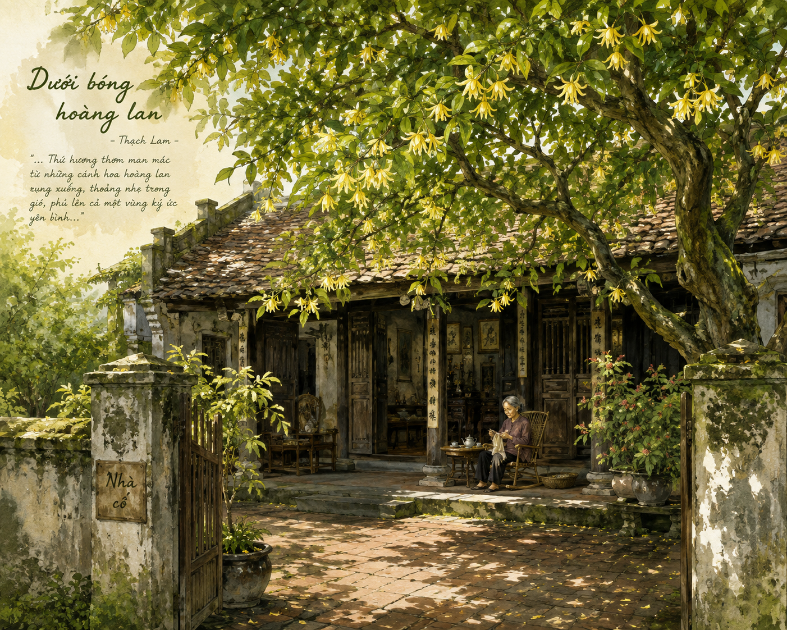
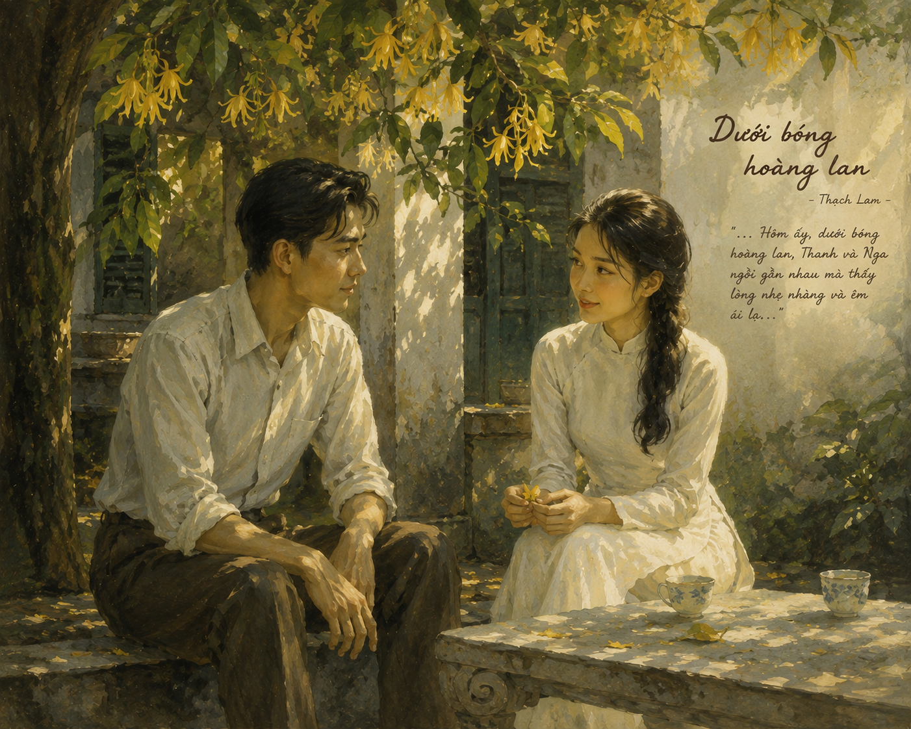

Tác giả: Thạch Lam

Hình 1: Không gian yên bình ngôi nhà cổ của bà và cây hoàng lan rợp bóng (đường dẫn sẵn: h1.png)
Bối cảnh: Thanh mồ côi cha mẹ, đi làm ở tỉnh xa, dịp này nghỉ việc trở về thăm bà nội.
Cảm xúc: Khi bước qua cánh cửa gỗ hẹp, đi trên con đường gạch Bát Tràng rêu phủ, Thanh thấy như trút bỏ mọi sự ồn ào vội vã nơi phố thị. Mọi thứ trong nhà vẫn "y nguyên như ngày chàng đi xửa đi xưa".
Hình ảnh người bà: Tóc bạc phơ, chống gậy trúc, nhai trầu hiền từ. Bà luôn chăm chút cho Thanh từng chút một: phẩy chiếc quạt trần, lo nấu canh rau cải, giục ăn cơm ngủ nghỉ.
Định nghĩa/Tính chất tình cảm: Tình bà cháu là chỗ dựa tinh thần vững chắc, nơi che chở dịu dàng cho Thanh trước những biến động của cuộc đời.

Hình 2: Cuộc trò chuyện tình tứ nhẹ nhàng giữa Thanh và Nga (đường dẫn sẵn: h2.png)
Cây hoàng lan: Cây cao vút, cành lá rủ xuống, tỏa hương thơm ngát dịu nhẹ. Đây là chứng nhân cho tuổi thơ chung bước của Thanh và Nga.
Cảm xúc tình yêu: Tình cảm giữa Thanh và Nga không sôi nổi mãnh liệt mà e ấp, kín đáo qua ánh mắt, nụ cười, cái nắm tay nhẹ nhàng dịu ngọt đêm trăng.
Hãy tìm những chi tiết mô tả tâm trạng của Thanh khi đứng dưới cây hoàng lan và phân tích vai trò của điểm nhìn ngôi thứ ba trong việc diễn tả tâm trạng ấy.
Nguyên nhân cốt lõi nào khiến Thanh cảm thấy thanh thản ngay khi trở về không gian ngôi nhà cũ?
| GIÁ TRỊ NGHỆ THUẬT | GIÁ TRỊ NỘI DUNG |
|---|---|
|
• Cốt truyện đơn giản, nhẹ nhàng, như một bài thơ văn xuôi. • Miêu tả diễn biến tâm trạng vô cùng tinh tế, sâu sắc. • Ngôn ngữ trong sáng, giàu hình ảnh và nhịp điệu êm ả. • Kết hợp nhuần nhuyễn giữa câu chuyện và cảm xúc trữ tình. |
• Ca ngợi tình bà cháu mộc mạc, thiêng liêng và tình yêu đầu đời trong sáng. • Khắc họa vẻ đẹp của làng quê Việt Nam thanh bình, yên ả. • Nhắn gửi thông điệp về sự trân trọng những giá trị bình dị, yêu thương gia đình. |
Câu 1: Câu chuyện được kể bằng lời của người kể chuyện ngôi thứ mấy? Ngôi kể ấy có nhất quán từ đầu đến cuối câu chuyện không?
Câu 2: Hình ảnh thiên nhiên, con người, cảnh sinh hoạt... hiện ra qua đôi mắt của nhân vật nào? Việc chọn điểm nhìn như vậy có ý nghĩa gì?
Câu 3: Lời đối thoại giữa bà và Thanh trong phần đầu xoay quanh chuyện gì? Tình cảm của các nhân vật bộc lộ như thế nào?
Câu 4: Phân tích những biểu hiện tình cảm giữa Nga và Thanh trong tác phẩm.
Câu 8: Nhận định của nhà thơ Thế Lữ: Tác phẩm của Thạch Lam "nhân từ như một lời yên ủi". Hãy phân tích ý kiến này qua truyện ngắn "Dưới bóng hoàng lan".
Cây Hoàng lan (còn gọi là Ngọc lan tây, Cananga odorata) là loại cây thân gỗ cho hoa có hương thơm quyến rũ, nhẹ nhàng. Trong văn học, hoa hoàng lan thường tượng trưng cho vẻ đẹp kín đáo, hoài niệm và trong sáng của tình yêu đầu đời.
Vận dụng kĩ thuật phân tích điểm nhìn ngôi thứ ba hạn định để viết một đoạn văn ngắn mô tả không gian gia đình thân thương của chính mình trong một buổi chiều bình yên.
Khi đọc truyện ngắn Thạch Lam, không nên tìm kiếm sự kịch tính hay biến cố dữ dội mà cần tập trung cảm nhận chất trữ tình, giọng văn nhẹ nhàng và thế giới nội tâm tinh tế của nhân vật.
Trả lời 10 câu hỏi để chinh phục đỉnh cao tri thức văn bản "Dưới bóng hoàng lan"
Lời giải chi tiết:
Hình tượng "Cây hoàng lan" giữ vai trò trung tâm trong cấu trúc nghệ thuật của tác phẩm:
Lời giải chi tiết: